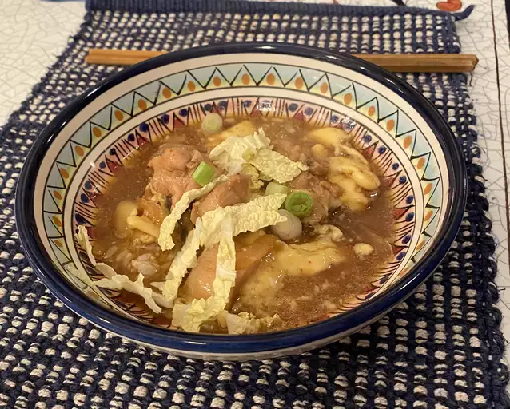

Home
Oyakodon

Description
A delicious Japanese meal consisting of sauteed chicken and eggs cooked in broth then served over rice.
Ingredients
- 1 teaspoon oil
- 1 piece of chicken thigh, cut into pieces
- 1/4 onion, sliced
- 1 cup dashi stock
- 1 tablespoon soy sauce
- 3 teaspoon mirin
- 2 eggs
- White rice
Steps
- Heat oil in large skillet over medium heat. Add chicken and cook about 5 minutes. Add onion; cook until translucent, about 5 minutes.
- Pour in stock, soy sauce, and mirin. Bring to a boil, then lower heat and simmer until slightly reduced, about 10 minutes.
- Whisk eggs in a bowl until well-beaten, then pour into the hot stock mixture. Cover the skillet, reduce the heat, and steam until egg is cooked, about 5 minutes. Remove from the heat.
- Put rice in a bowl and top with the mixture and soup.